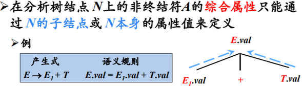
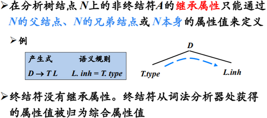
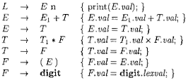
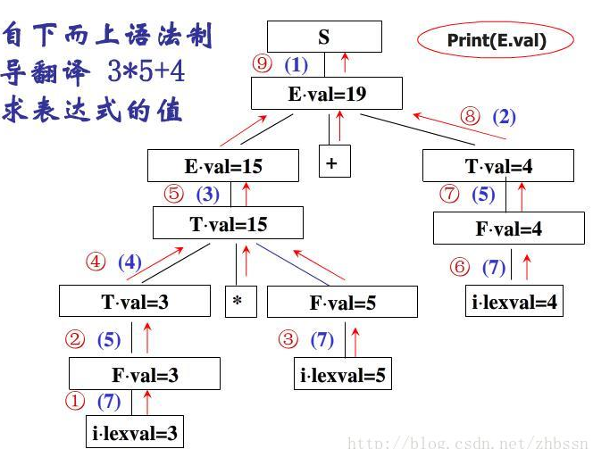
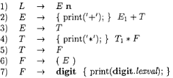
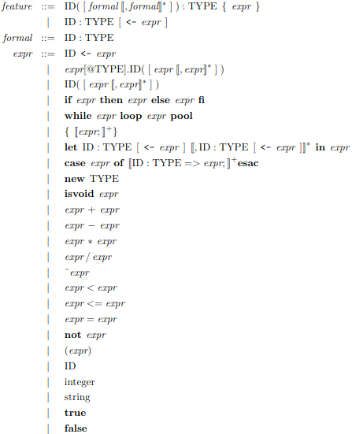
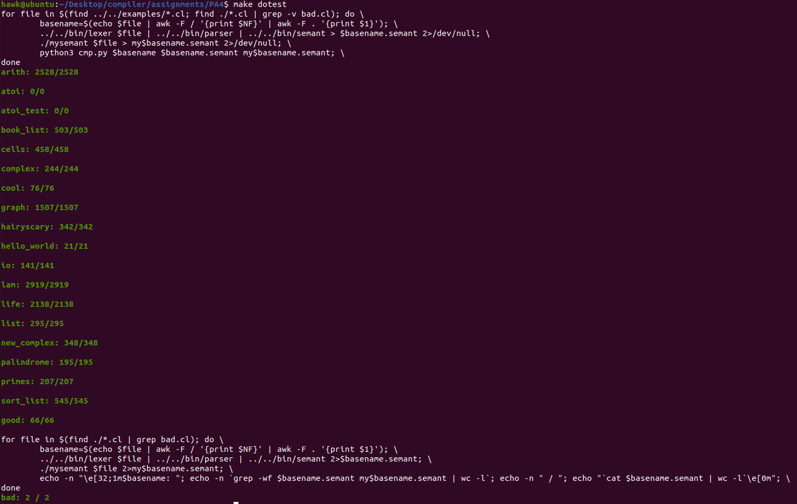

编译原理-设计与实现-三
前言
语义分析略难…。
这里简单记录一下语义分析相关的知识，并且完成Programming Assignment V
Semantic Analysis
语义分析是编译器的第三个阶段。语义分析器从语法分析器处获得一棵AST，并检查该AST的上下文相关的属性
属性文法
为了确定AST中诸如变量节点类型等问题，则自然的，需要指定该节点的数据类型属性，则必须给节点配备一系列属性。
然后，再利用节点的相关属性，从而在AST上进行一系列的语义动作(诸如类型检查等)
Syntax-Directed Definition
语法制导定义(SDD)，即为每个文法符号引入一组属性，并且每个文法的产生式都配备一组与之关联的语义计算规则
而这些属性可以简单分为两类
综合属性(synthesized attribute):
即产生式头的符号属性由产生式体的属性定义
继承属性(inherited attribute):
即产生式体的符号属性由产生式头和该符号左侧的产生式体的属性定义
基于此，可简单将SDD分为两类
- S属性
如果一个SDD的每个属性都是综合属性 L属性
对于SDD的每个属性- 要么是综合属性
- 要么是继承属性，但满足如下限值：
对于产生式及其对应的规则定义的继承属性- 是和产生式头关联的继承属性
- 是位于左边的文法符号相关的继承属性或综合属性
- 是和本身相关的继承属性或综合属性
之所以这样分类，是为了之后进行语义分析时，只需要尽可能少的遍历AST即可完成——因为S属性和L属性的传导是单向的
Syntax-Directed Translation Scheme
如果我们构建相关的属性文法，并对于每个语法的产生式，都额外的嵌入相关的语义动作。
对于传入的AST，按照前序遍历的方式遍历该AST——当产生式体中的一个动作在其左边的所有文法符号都匹配之后立刻执行。这样，就相当于完成了语义分析
基于前面的属性文法，语法制导的翻译方案大体可分为两类——自底向上的S属性的SDD、自顶向下L属性的SDD
自底向上的S属性的SDD语义分析(一般配合LR语法分析)
对于该情况，使用如下方式构造SDT——将每个语义动作都放在产生式的最后面
这样子，就完成了该情况下的语义分析


自顶向下的L属性的SDD语义分析(一般配合LL语法分析)
对于该情况，使用如下方式构造SDT
- 将计算某个非终结符号的继承属性的动作插入到产生式体中紧靠在的本次出现之前的位置上
将计算一个产生式头的综合属性的动作放置在这个产生式体的最右端
这样子，就完成了该情况下的语义分析


PA4 Semantic Analysis
实验描述
在该实验中，需要完成Cool的语义分析器，从而完成输入的AST的语法检查，并返回一个注释语法分析树annotated AST
需要注意的是，实现的语义分析器应该具有足够的鲁棒性——可以在任何输入下都正常工作，即可以处理错误
实验环境
该实验中依赖2.4版本的Bison，和之前的Flex，则在assignments/PA4目录执行如下命令设置环境
1
2
3
4sudo apt-get update \
&& sudo apt-get install -y m4 \
&& (cd ../../bin/flex; ./configure; make; sudo make install) \
&& (cd ../../bin/bison; ./configure; make; sudo make install)
实验实现
下面是个人的思路及其实现
这次实验着实给我留下了非常深刻的影响——一开始看不懂框架逻辑；实现一部分发现模块设计不合理；最终测试时面向测试样例编程
当完成最终的试验后，回过头发现根本原因还是实验文档没有细读，实验中遇到的很多问题，在实验文档中有详细的描述并给出了解决方法。
虽然如此，即使重新完成一次实验，甚至一百次试验，我估计还是和第一次类似的体验——因为一开始对项目框架不理解，只有实现了一部分后才明白框架逻辑，但此时一开始实现的代码逻辑已经制约了后续代码编写，只能在前面的基础上修修补补(或者重构)。
下面说明一下语义分析的逻辑
实际上，语义分析可以抽象为下面三个模块
- 解析接口定义：包括类、类的属性和类的方法
解析接口实现：包括类的方法的方法体的实现
可以看到，将源代码分为了两部分——接口定义(方法体之外)和接口实现(方法体)
也就是方法体之外定义了方法体之内可以用到的接口(也就是类型、方法和部分变量)，方法体只能额外的自定义变量和变量间关系
如果理解了这一点，整个项目就会比较明了
解析接口定义
这部分也可以简单分为两部分
- 类的继承关系
类的属性和方法
这里的难点在于一个类的属性或方法，可能用到了还没解析到的类，如何判断该类是合法的还是非法的。
当然，有多种方法进行实现，这里使用的是遍历两遍——第一遍解析所有的类后，有了全部的类信息，此时在解析类的属性和方法，就可以轻松地判断相关的类是合法还是非法的。
类的继承关系
也就是相当于第一遍遍历，可以使用unordered_map结构来记录类的继承关系，处理代码如下所示
1
2
3
4
5
6
7
8
9
10
11
12
13
14
15
16
17
18
19
20
21
22
23
24
25
26
27
28
29
30
31
32
33
34
35
36
37
38
39
40
41
42
43
44
45
46
47
48
49
50
51
52
53
54
55
56
57
58
59
60
61
62
63
64
65
66
67
68
69
70
71
72
73
74
75
76
77
78
79
80
81
82
83
84
85
86
87
88
89
90
91
92
93
94
95
96
97
98
99
100
101
102
103
104
105
106
107
108
109
110
111
112
113
114
115
116
117
118
119
120
121
122
123
124
125
126
127
128
129
130
131
132
133
134
135
136
137
138
139
140
141
142
143
144
145
146
147
148
149
150
151
152
153
154
155
156
157
158
159
160
161
162
163
164
165
166
167
168class ClassTable {
private:
int semant_errors;
void install_class(Symbol symbol, Class_ class_);
void install_class(Symbol symbol, Class_ class_, Symbol inherit);
void install_basic_classes();
void install_define_class(Class_ class_);
...
/*
class A inherits B
则inherits[A] = B
*/
std::unordered_map<Symbol, Symbol> inherits;
std::unordered_map<Symbol, Class_> symbol_to_class;
void check_inherits();
public:
ClassTable(Classes);
int errors() { return semant_errors; }
ostream& semant_error();
ostream& semant_error(Class_ c);
ostream& semant_error(tree_node *t);
ostream& semant_error(Symbol filename, tree_node *t);
...
};
/*
* arg1:Symbol symbol，即类的符号信息
* arg2:Class_ class_，即类的结构信息
*
* 也就是添加该类，其继承的类是Object
*/
void ClassTable::install_class(Symbol symbol, Class_ class_) {
install_class(symbol, class_, Object);
}
/*
* arg1:Symbol symbol，即类的符号信息
* arg2:Class_ class_，即类的结构信息
* arg3:Symbol inherit，即继承的类的符号信息
*
* 也就是添加该类，其继承的类是inherit，并且添加相关的方法
*/
void ClassTable::install_class(Symbol symbol, Class_ class_, Symbol inherit) {
symbol_to_class.insert(std::pair<Symbol, Class_>(symbol, class_));
inherits.insert(std::pair<Symbol, Symbol>(symbol, inherit));
}
/*
* arg1： Class_ class_，即在程序中定义的类
*
* 即添加程序中自定义的类
* 这里需要检查类的标识符、类中Feature的标识符的唯一
*/
void ClassTable::install_define_class(Class_ class_) {
/*
* 进行如下检查
* 1. 避免继承String、Bool、Int类型
*/
Symbol inherit = class_->get_inherit();
if(inherit == Str || inherit == Bool || inherit == Int) {
semant_error(class_) << "Class "
<< class_->get_name()->get_string() << " cannot inherit class "
<< inherit->get_string() << "." << endl;
}
install_class(class_->get_name(), class_, class_->get_inherit());
}
/*
* 检查程序中类的 继承关系
*
* 1. 检查继承关系存在的环
* 2. 检查继承关系继承不存在的类
*
* 这里通过DFS遍历inherits，并配合unordered_set即可
*/
void ClassTable::check_inherits() {
std::unordered_map<Symbol, Symbol> map;
for(auto &iter : inherits) {
if(map.find(iter.first) != map.end()) { continue; }
/*
* 说明当前继承类还没有被遍历
* 开始DFS遍历
*/
std::unordered_set<Symbol> sets;
Symbol symbol = iter.first;
/*
* 如果symbol == Object，则其已经遍历到Object，无需继续遍历
* 如果symbol不在inherits中，则说明symbol未被定义(否则一定存在一条路径，使其继承自Object)
*/
while(symbol != Object && inherits.find(symbol) != inherits.end()) {
map[symbol] = inherits[symbol];
sets.insert(symbol);
symbol = inherits[symbol];
if(sets.find(symbol) != sets.end() || (map.find(symbol) != map.end() && map[symbol] == nullptr)) {
/*
* 说明从iter.first 到 symbol， 存在环，将其map都设置为nullptr即可
*/
Symbol s = iter.first;
do {
map[s] = nullptr;
s = inherits[s];
}while(s != symbol);
break;
}else if(map.find(symbol) != map.end() && map[symbol] != nullptr) {
/*
* 说明该symbol已经被遍历过了，且不存在环
* 则无需在遍历后面
*/
break;
}
}
}
/*
* 遍历整个map
* 如果map[symbol] == nullptr，则说明在环的路径中
* 如果map[symbol]不在symbol_to_class中，则说明继承不存在的类
*/
for(auto &iter : map) {
if(iter.second == nullptr) {
semant_error(symbol_to_class[iter.first]) << "Class " << iter.first->get_string() << ", or an ancestor of "
<< iter.first->get_string() << ", is involved in an inheritance cycle." << endl;
}else if(symbol_to_class.find(iter.second) == symbol_to_class.end()) {
semant_error(symbol_to_class[iter.first]) << "Class " << iter.first->get_string() << " inherits from an undefined class "
<< iter.second->get_string() << "." << endl;
}
}
}
ClassTable::ClassTable(Classes classes) : semant_errors(0) , error_stream(cerr) {
...
/* 初始化基础类 */
install_basic_classes();
/* 初始化程序定义类 */
for(int i = classes->first(); classes->more(i); i = classes->next(i)) { install_define_class(classes->nth(i)); }
/* 检查类 继承关系 */
check_inherits();
}
类的属性和方法
在Cool的语法分析中，类似于最开始介绍的属性文法，类的属性和方法都抽象成Feature_class节点，节点中包含相关的属性信息。
则可以使用unordered_map<Symbol, unordered_map<Symbol, Feature_class>>结构进行存储
而考虑到Cool的语法允许类的属性和类的方法同名，则分别独立的进行存储即可，相关代码如下所示
1
2
3
4
5
6
7
8
9
10
11
12
13
14
15
16
17
18
19
20
21
22
23
24
25
26
27
28
29
30
31
32
33
34
35
36
37
38
39
40
41
42
43
44
45
46
47
48
49
50
51
52
53
54
55
56
57
58
59
60
61
62
63
64
65
66
67
68
69
70
71
72
73
74
75
76
77
78
79
80
81
82
83
84
85
86
87
88
89
90
91
92
93
94
95
96
97
98
99
100
101
102
103
104
105
106
107
108
109
110
111
112
113
114
115
116
117
118
119
120
121
122
123
124
125
126
127
128
129
130
131
132
133
134
135
136
137
138
139
140
141
142
143
144
145
146
147
148
149
150
151
152
153
154
155
156
157
158
159
160
161
162
163
164
165
166
167
168
169
170
171
172
173
174
175
176
177
178
179
180
181
182
183
184
185
186
187
188
189
190
191
192
193
194
195
196
197
198
199
200
201
202
203
204
205
206
207
208
209
210
211
212
213
214
215
216
217
218
219
220
221
222
223
224
225
226
227
228
229
230
231
232
233
234
235class ClassTable {
private:
...
typedef std::unordered_map<Symbol, attr_class*> Attr_type;
typedef std::unordered_map<Symbol, method_class*> Method_type;
/*
* 即Cool-Manual中定义的Type Environments
*
* 按照手册可知
* 其应该至少包含三部分
* 1. Method Environment
* 2. Object Environment
* 3. 当前类名称
*
* 除此之外，其应该提供如下方法
* 1. M(v) = T，即根据对象名称返回其类型
* 2. M(C, f) = (T1, ...., Tn - 1, Tn)，级根据方法名称返回一系列特征
* 3. 返回SELF_TYPE类型，即当前类名称
*/
std::unordered_map<Symbol, Attr_type*> *attr_environment;
std::unordered_map<Symbol, Method_type*> *method_environment;
Symbol self;
void assert_self() {
if(self == nullptr) {
cerr << "self is nullptr";
exit(1);
}
}
public:
...
/*
* arg1: attr_class *attr，要添加的attr的结构指针
*
* 即将attr添加入attr_environment中，添加前需要检查是否重复定义，这里不考虑父类继承情况
*/
void add(attr_class *attr) {
assert_self();
Attr_type *attr_map = attr_environment->find(self)->second;
/*
* 如果重复定义的话，则输出相关的错误信息即可
*/
if(attr_map->find(attr->get_name()) != attr_map->end()) {
semant_error(attr) << "Attribute " << attr->get_name()->get_string() << " is multiply defined in class." << endl;
}else {
attr_map->insert(std::pair<Symbol, attr_class*>(attr->get_name(), attr));
}
}
/*
* arg1: method_class *method，要添加的method的结构指针
*
* 即将method添加入method_environment中，添加前需要检查是否重复定义，这里不考虑父类继承情况
*/
void add(method_class *method) {
assert_self();
Method_type *method_map = method_environment->find(self)->second;
/*
* 如果重复定义的话，则输出相关的错误信息即可
*/
if(method_map->find(method->get_name()) != method_map->end()) {
semant_error(method) << "Method " << method->get_name()->get_string() << " is multiply defined in class." << endl;
}else {
method_map->insert(std::pair<Symbol, method_class*>(method->get_name(), method));
}
}
/*
* arg1: Symbol inherit, 要添加的Feature所述的类所继承的类
*
* 即将arg2继承的类的属性和方法，覆盖到子类中——需要注意的是，当子类中已经存在时，无需再覆盖处理
*/
void add(Symbol inherit) {
assert_self();
/*
* 当类依赖不存在的类时
* 需要特殊判断
*/
Attr_type *attr_map = attr_environment->find(self)->second;
/*
* 可能继承不存在的类
* 这里需要判断，避免崩溃
*/
if(attr_environment->find(inherit) != attr_environment->end()) {
for(auto &iter : *attr_environment->find(inherit)->second) {
if(attr_map->find(iter.first) == attr_map->end()) {
attr_map->insert(std::pair<Symbol, attr_class*>(iter.first, iter.second));
}
}
}
Method_type *method_map = method_environment->find(self)->second;
/*
* 可能继承不存在的类
* 这里需要判断，避免崩溃
*/
if(method_environment->find(inherit) != method_environment->end()) {
for(auto &iter : *method_environment->find(inherit)->second) {
if(method_map->find(iter.first) == method_map->end()) {
method_map->insert(std::pair<Symbol, method_class*>(iter.first, iter.second));
}
}
}
}
void enter_scope(Symbol class_) {
self = class_;
if(attr_environment->find(self) == attr_environment->end()) { attr_environment->insert(std::pair<Symbol, Attr_type*>(self, new Attr_type())); }
if(method_environment->find(self) == method_environment->end()) { method_environment->insert(std::pair<Symbol, Method_type*>(self, new Method_type())); }
}
void exit_scope() {
assert_self();
self = nullptr;
}
Symbol probe() { return self; }
/*
* 检查是否存在Main类和main方法
*/
void check_mains();
};
/*
* 即将类的方法和属性，添加到env中
* 从而为之后检查提供信息
*/
void method_class::add_to_classtable(ClassTable *class_table) { class_table->add(this); }
void attr_class::add_to_classtable(ClassTable *class_table) { class_table->add(this); }
/*
* 遍历两遍inherits(保存所有的类)
*
* 第一遍添加当前类的属性和方法
* 第二遍将父类的feature添加到子类中
*/
void ClassTable::install_features() {
for(auto &iter : inherits) {
enter_scope(iter.first);
Features features = symbol_to_class[iter.first]->get_features();
for(int i = features->first(); features->more(i); i = features->next(i)) { features->nth(i)->add_to_classtable(this); }
exit_scope();
}
std::unordered_set<Symbol> hasSolved;
hasSolved.insert(Object);
/*
* 使用dfs，解决多层递归问题
*/
for(auto &iter : inherits) {
if(hasSolved.find(iter.first) != hasSolved.end()) { continue; }
std::stack<Symbol> stack;
Symbol s = iter.first;
//dfs解决多层递归
while(hasSolved.find(s) == hasSolved.end()) {
stack.push(s);
s = inherits[s];
}
while(!stack.empty()) {
enter_scope(stack.top());
add(s);
exit_scope();
s = stack.top();
stack.pop();
hasSolved.insert(s);
}
}
}
/*
* 检查程序中类是否存在Main类和main方法
*/
void ClassTable::check_mains() {
//检查Main类
if(inherits.find(Main) == inherits.end()) {
semant_error() << "Class Main is not defined." << endl;
return;
}
// 检查main方法
Method_type *method_map = method_environment->at(Main);
if(method_map->find(main_meth) == method_map->end()) {
semant_error(symbol_to_class[Main]) << "No 'main' method in class Main." << endl;
}
}
ClassTable::ClassTable(Classes classes) : semant_errors(0) , error_stream(cerr) {
...
/* 初始化类的属性和方法 */
install_features();
/* 检查是否存在Main类和main方法 */
check_mains();
}
解析接口实现
解析接口实现，主要也包括两部分
- 检验方法体添加的变量合法性
检验方法体定义的变量关系(表达式)的合法性
实际上，这部分与实验文档的关联非常紧密——一开始没有认真分析实验文档，导致与标准的语义分析器的输出结果天差地别。
总的来说，其实现逻辑比较简单,考虑到Cool的方法体结构，可以使用自顶向下的遍历模式
如果在feature、formal和expr节点中都统一定义接口
Symbol check_type(ClassTable *class_table)
表示检查和设置当前节点的合法性，并且返回该节点对应的最终类型，则实现解析接口实现的逻辑就非常简单——从feature节点开始，对于其属性文法中的相关属性递归调用check_type，并且根据其返回信息，验证该节点中的属性间的合法性具体每一类节点的合法性规则定义在了实验指南中，一定要认真阅读，否则之后测试时会很痛苦，之后就是具体实现实验指南中的每一个类型规则即可。
相关的代码如下所示1
2
3
4
5
6
7
8
9
10
11
12
13
14
15
16
17
18
19
20
21
22
23
24
25
26
27
28
29
30
31
32
33
34
35
36
37
38
39
40
41
42
43
44
45
46
47
48
49
50
51
52
53
54
55
56
57
58
59
60
61
62
63
64
65
66
67
68
69
70
71
72
73
74
75
76
77
78
79
80
81
82
83
84
85
86
87
88
89
90
91
92
93
94
95
96
97
98
99
100
101
102
103
104
105
106
107
108
109
110
111
112
113
114
115
116
117
118
119
120
121
122
123
124
125
126
127
128
129
130
131
132
133
134
135
136
137
138
139
140
141
142
143
144
145
146
147
148
149
150
151
152
153
154
155
156
157
158
159
160
161
162
163
164
165
166
167
168
169
170
171
172
173
174
175
176
177
178
179
180
181
182
183
184
185
186
187
188
189
190
191
192
193
194
195
196
197
198
199
200
201
202
203
204
205
206
207
208
209
210
211
212
213
214
215
216
217
218
219
220
221
222
223
224
225
226
227
228
229
230
231
232
233
234
235
236
237
238
239
240
241
242
243
244
245
246
247
248
249
250
251
252
253
254
255
256
257
258
259
260
261
262
263
264
265
266
267
268
269
270
271
272
273
274
275
276
277
278
279
280
281
282
283
284
285
286
287
288
289
290
291
292
293
294
295
296
297
298
299
300
301
302
303
304
305
306
307
308
309
310
311
312
313
314
315
316
317
318
319
320
321
322
323
324
325
326
327
328
329
330
331
332
333
334
335
336
337
338
339
340
341
342
343
344
345
346
347
348
349
350
351
352
353
354
355
356
357
358
359
360
361
362
363
364
365
366
367
368
369
370
371
372
373
374
375
376
377
378
379
380
381
382
383
384
385
386
387
388
389
390
391
392
393
394
395
396
397
398
399
400
401
402
403
404
405
406
407
408
409
410
411
412
413
414
415
416
417
418
419
420
421
422
423
424
425
426
427
428
429
430
431
432
433
434
435
436
437
438
439
440
441
442
443
444
445
446
447
448
449
450
451
452
453
454
455
456
457
458
459
460
461
462
463
464
465
466
467
468
469
470
471
472
473
474
475
476
477
478
479
480
481
482
483
484
485
486
487
488
489
490
491
492
493
494
495
496
497
498
499
500
501
502
503
504
505
506
507
508
509
510
511
512
513
514
515
516
517
518
519
520
521
522
523
524
525
526
527
528
529
530
531
532
533
534
535
536
537
538
539
540
541
542
543
544
545
546
547
548
549
550
551
552
553
554
555
556
557
558
559
560
561
562
563
564
565
566
567
568
569
570
571
572
573
574
575
576
577
578
579
580
581
582
583
584
585
586
587
588
589
590
591
592
593
594
595
596
597
598
599
600
601
602
603
604
605
606
607
608
609
610
611
612
613
614
615
616
617
618
619
620
621
622
623
624
625
626
627
628
629
630
631
632
633
634
635
636
637
638
639
640
641
642
643
644
645
646
647
648
649
650
651
652
653
654
655
656
657
658
659
660
661
662
663
664
665
666
667
668
669
670
671
672
673
674
675
676
677
678
679
680
681
682
683
684
685
686
687
688
689
690
691
692
693
694
695
696
697
698
699
700
701
702
703
704
705
706
707
708
709
710
711
712
713
714
715
716
717
718
719
720
721
722
723
724
725
726
727
728
729
730
731
732
733
734
735
736
737
738
739
740
741
742
743
744
745
746
747
748
749
750
751
752
753
754
755
756
757
758
759
760
761
762
763
764
765
766
767
768
769
770
771
772
773
774
775
776
777
778
779
780
781
782
783
784
785
786
787
788
789
790
791
792
793
794
795
796
797
798
799
800
801
802
803
804
805
806
807
808
809
810
811
812
813
814
815
816
817
818
819
820
821
822
823
824
825
826
827
828
829
830
831
832
833
834
835
836
837
838
839
840
841
842
843
844
845
846
847
848
849
850
851
852
853
854
855
856
857
858
859
860
861
862
863
864
865
866
867
868
869
870
871
872
873
874
875
876
877
878
879
880
881
882
883
884
885
886
887
888
889
890
891
892
893
894
895
896
897
898
899
900
901
902
903
904
905
906
907
908
909
910
911
912
913
914
915
916
class ClassTable {
private:
...
typedef std::unordered_map<Symbol, attr_class*> Attr_type;
typedef std::unordered_map<Symbol, method_class*> Method_type;
/*
* 即Cool-Manual中定义的Type Environments
*
* 按照手册可知
* 其应该至少包含三部分
* 1. Method Environment
* 2. Object Environment
* 3. 当前类名称
*
* 除此之外，其应该提供如下方法
* 1. M(v) = T，即根据对象名称返回其类型
* 2. M(C, f) = (T1, ...., Tn - 1, Tn)，级根据方法名称返回一系列特征
* 3. 返回SELF_TYPE类型，即当前类名称
*/
SymbolTable<Symbol, Class_> *object_environment;
std::unordered_map<Symbol, Attr_type*> *attr_environment;
std::unordered_map<Symbol, Method_type*> *method_environment;
Symbol self;
public:
...
/*
* 对于enter_scope和exit_scope，除了设置self及相关参数以外，还需要进行额外的检查
* 而对于object_enter_scope和object_exit_scope外，则简单的调用相关方法即可
*/
void object_enter_scope() { object_environment->enterscope(); }
void object_exit_scope() { object_environment->exitscope(); }
/*
* 当前scope中已经不存在相同名称变量
* 其类型也是有效的
* 直接添加即可
*/
void object_add(Symbol symbol, Symbol class_) { object_environment->addid(symbol, new Class_(symbol_to_class[class_])); }
/*
* 在当前的scope中，查找变量对应的类型
* 也就是调用object_environment即可
* 如果变量不存在，则返回nullptr
*/
Symbol lookup_object(Symbol symbol);
void enter_scope(Symbol class_) {
self = class_;
if(attr_environment->find(self) == attr_environment->end()) { attr_environment->insert(std::pair<Symbol, Attr_type*>(self, new Attr_type())); }
if(method_environment->find(self) == method_environment->end()) { method_environment->insert(std::pair<Symbol, Method_type*>(self, new Method_type())); }
}
void exit_scope() {
assert_self();
self = nullptr;
}
Symbol probe() { return self; }
/*
* arg1： Symbol class_ 待查找的类符号
*
* 查找程序中是否存在class_的类
* 如果存在，则返回Class_即可
* 否则，返回nullptr
*/
Symbol lookup_class(Symbol class_);
/*
* arg1: Symbol a 类符号
* arg2: Symbol b 类符号
*
* 判断a是否继承自b
*/
bool isInherits(Symbol a, Symbol b);
/*
* arg1: Symbol a 继承树的节点1
* arg2: Symbol b 继承树的节点2
*
* 找到a和b最近的公共祖先
*/
Symbol findLowestCommonAncestor(Symbol a, Symbol b);
/*
* arg1: Symbol class_ 即要分发的类
* arg2: Symbol method 要分发的类的方法名称
*
* 查找class_.method的函数信息
*/
method_class *lookup_method(Symbol class_, Symbol method) {
class_ = lookup_class(class_);
if(method_environment->find(class_) == method_environment->end()) { return nullptr; }
Method_type *method_map = method_environment->at(class_);
if(method_map->find(method) == method_map->end()) {return nullptr; }
return method_map->at(method);
}
};
/*
* arg1： Symbol class_ 待查找的类符号
*
* 查找程序中是否存在class_的类
* 如果存在，则返回相关的Symbol
* 否则，返回nullptr
*/
Symbol ClassTable::lookup_class(Symbol class_) {
if(class_ == SELF_TYPE) { class_ = probe(); }
if(symbol_to_class.find(class_) != symbol_to_class.end()) {
return class_;
}
return nullptr;
}
/*
* arg1: Classes classes 程序的类集合
*
* 实际上，也就是遍历类的成员方法
* 检查成员方法中表达式的合法性
*
* 也就是通过在Feature、Expression_class和Case_class中实现check_type()方法
* 从而实现类型检查和类型推断功能
*
* 之后只要在每一个Feature中调用check_type，其会递归的调用check_type，从而完成最终的类型检查
* 这里调用check_type时，其预期的返回值类型总是Object(从而兼容绝大多数的返回值类型)
*/
void ClassTable::check_types(Classes classes) {
for(int i = classes->first(); classes->more(i); i = classes->next(i)) {
Class_ class_ = classes->nth(i);
Features features = class_->get_features();
enter_scope(class_->get_name());
object_enter_scope();
for(int j = features->first(); features->more(j); j = features->next(j)) { features->nth(j)->check_type(this); }
object_exit_scope();
exit_scope();
}
}
/*
* arg1: Symbol a 类符号
* arg2: Symbol b 类符号
*
* 判断a是否继承自b
*/
bool ClassTable::isInherits(Symbol a, Symbol b) {
a = lookup_class(a);
b = lookup_class(b);
while(true) {
if(a == b) { return true; }
if(a == Object) { return false; }
a = inherits[a];
}
}
/*
* arg1: Symbol symbol 要查找的变量
* 在当前的scope中，查找变量对应的类型
* 也就是调用object_environment即可
*/
Symbol ClassTable::lookup_object(Symbol symbol) {
if(symbol == ::self) { return SELF_TYPE; }
//首先在object_environment中查找
Class_ *class_ = (object_environment->lookup(symbol));
if(class_ != NULL) { return (*class_)->get_name(); }
//如果在object中没找到，则在当前类中进行查找
Attr_type *attr_map = attr_environment->at(probe());
if(attr_map->find(symbol) != attr_map->end()) { return attr_map->at(symbol)->get_type(); }
//如果未定义该变量，则直接返回nullptr即可
return nullptr;
}
/*
* arg1: Symbol a 继承树的节点1
* arg2: Symbol b 继承树的节点2
*
* 找到a和b最近的公共祖先
*/
Symbol ClassTable::findLowestCommonAncestor(Symbol a, Symbol b) {
/*
* 基本思路就是保存a的路径
* 然后依次遍历b的路径即可
* 直到找到第一个出现在a路径中的节点为止
*
* 这里不需要考虑a/b非法的情况
*/
a = lookup_class(a);
if(a == b) { return a;}
if(a == nullptr) { return b; }
if(b == nullptr) { return a; }
std::unordered_set<Symbol> sets;
while(a != Object) {
sets.insert(a);
a = inherits[a];
}
sets.insert(Object);
//遍历b的路径并判断
while(b != Object) {
if(sets.find(lookup_class(b)) != sets.end()) { return b; }
b = inherits[lookup_class(b)];
}
//理论上执行不到这里
return Object;
}
/*
* 这里实现具体的类型检查和类型推断
*/
Symbol attr_class::check_type(ClassTable *class_table) {
/*
* 需要检查如下规则
* 1. attr属性是合法的
* 2. attr属性和表达式一致
*/
Symbol symbol = class_table->lookup_class(get_type());
// attr属性不合法
if(symbol == nullptr) {
class_table->semant_error(this) <<
"Class " << get_type()->get_string() <<
" of attribute " << get_name()->get_string() <<
" is undefined." << endl;
//为了类型检查可以继续
symbol = Object;
}
//确保表达式和属性类型一致
Symbol return_type = this->get_init()->check_type(class_table);
if(return_type != No_class && !class_table->isInherits(return_type, symbol)) {
class_table->semant_error(this) << "Inferred type " <<
return_type->get_string() << " of initialization of attribute a does not conform to declared type " <<
symbol->get_string() << "." << endl;
}
return No_type;
}
Symbol method_class::check_type(ClassTable *class_table) {
/*
* 需要检查如下规则
* 1. method的参数是有效参数
* 2. method的返回值是有效返回值
* 3. method的返回值和实际的返回值一致
*/
class_table->object_enter_scope();
Formals formals = this->get_formals();
//检查method的类型是否为有效类型
for(int i = formals->first(); formals->more(i); i = formals->next(i)) {
Formal formal = formals->nth(i);
if(formal->get_type() == SELF_TYPE) {
class_table->semant_error(this) <<
"Formal parameter " << formal->get_name() << " cannot have type SELF_TYPE." << endl;
//为了确保后续正常解析，设置参数类型为Object
class_table->object_add(formal->get_name(), class_table->lookup_class(Object));
}else if(class_table->lookup_class(formal->get_type()) == nullptr) {
class_table->semant_error(this) <<
"Class " << formal->get_type()->get_string() <<
" of formal parameter " << formal->get_name() << " is undefined." << endl;
//为了确保后续正常解析，设置参数类型为Object
class_table->object_add(formal->get_name(), class_table->lookup_class(Object));
}else { class_table->object_add(formal->get_name(), class_table->lookup_class(formal->get_type())); }
}
//检查method的返回值是否为有效值
Symbol symbol = get_return_type();
if(class_table->lookup_class(symbol) == nullptr) {
class_table->semant_error(this) <<
"Undefined return type " << get_return_type()->get_string()
<< " in method " << get_name() << "." << endl;
}else { symbol = class_table->lookup_class(symbol); }
//检查method的返回值和实际的返回值一致
Symbol return_type = this->get_expr()->check_type(class_table);
if(!class_table->isInherits(return_type, symbol)) {
class_table->semant_error(this) <<
"Inferred return type " << return_type->get_string() <<
" of method " << get_name()->get_string() << " does not conform to declared return type " <<
symbol->get_string() << "." << endl;
}
class_table->object_exit_scope();
return No_type;
}
Symbol branch_class::check_type(ClassTable *class_table) {
/*
* 需要进行如下规则的检查
* 1. 类型是合法的
*/
Symbol name = get_name(), type = get_type_decl();
if(class_table->lookup_class(type) == nullptr) {
class_table->semant_error(this) << "Class "
<< type->get_string() << " of case branch is undefined." << endl;
//方便进行处理
type = Object;
}else { type = class_table->lookup_class(type); }
class_table->object_enter_scope();
class_table->object_add(name, type);
Symbol return_type = get_expr()->check_type(class_table);
class_table->object_exit_scope();
return return_type;
}
Symbol assign_class::check_type(ClassTable *class_table) {
/*
* 需要进行如下规则的检查
* 1. 变量名称之前存在
* 3. 表达式类型是变量类型的继承类型
*/
//检查变量名是否存在
Symbol type = class_table->lookup_object(get_name());
if(type == nullptr) {
class_table->semant_error(this) << "Assignment to undeclared variable "
<< get_name() << "." << endl;
//简单的处理方式
type = Object;
}
//检查表达式类型是变量类型的继承类型
Symbol return_type = get_expr()->check_type(class_table);
if(!class_table->isInherits(return_type, type)) {
class_table->semant_error(this) << "Type "
<< return_type->get_string() << " of assigned expression does not conform to declared type "
<< type->get_string() << " of identifier " << get_name()->get_string() << "." << endl;
}
set_type(return_type);
return return_type;
}
Symbol static_dispatch_class::check_type(ClassTable *class_table) {
/*
* 需要做如下规则检查
* 1. 验证类型有意义
* 2. 相关的函数有定义
* 3. 参数列表个数
* 4. 参数列表内容
*/
//验证静态类型有意义
Symbol expr = get_expr()->check_type(class_table);
if(class_table->lookup_class(get_type_name()) == nullptr) {
class_table->semant_error(this) << "Static dispatch to undefined class "
<< get_type_name()->get_string() << "." << endl;
//方法不存在，则后面无需在进行检查
set_type(Object);
return Object;
}
if(!class_table->isInherits(expr, get_type_name())) {
class_table->semant_error(this) << "Expression type "
<< expr->get_string() << " does not conform to declared static dispatch type "
<< get_type_name()->get_string() << "." << endl;
//方法不存在，则后面无需在进行检查
set_type(Object);
return Object;
}
//首先检验相关的函数有定义
method_class *method = nullptr;
if((method = class_table->lookup_method(get_type_name(), get_name())) == nullptr) {
class_table->semant_error(this) << "Dispatch to undefined method "
<< get_name() << "." << endl;
//方法不存在，则后面无需在进行检查
set_type(Object);
return Object;
}
//检验参数符号列表个数是否一致
Formals formals = method->get_formals();
Expressions expressions = get_actual();
if(formals->len() != expressions->len()) {
class_table->semant_error(this) << "Method "
<< get_name() << " called with wrong number of arguments." << endl;
//参数不一致，则后面无需在进行检查
set_type(method->get_return_type());
return method->get_return_type();
}
//检验参数列表是否一致
for(int i = formals->first(); formals->more(i); i = formals->next(i)) {
Symbol temp = expressions->nth(i)->check_type(class_table);
Formal formal = formals->nth(i);
if(!class_table->isInherits(temp, formal->get_type())) {
class_table->semant_error(this) << "In call of method "
<< get_name()->get_string() << ", type " << temp->get_string() << " of parameter "
<< formal->get_name()->get_string() << " does not conform to declared type "
<< formal->get_type()->get_string() << "." << endl;
//参数不一致，则后面无需在进行检查
set_type(method->get_return_type());
return method->get_return_type();
}
}
Symbol return_type = method->get_return_type();
if(return_type == SELF_TYPE) { return_type = get_type_name(); }
set_type(return_type);
return return_type;
}
Symbol dispatch_class::check_type(ClassTable *class_table) {
/*
* 需要做如下规则检查
* 1. 相关的函数有定义
* 2. 参数列表个数
* 3. 参数列表内容
*/
//首先检验相关的函数有定义
Symbol expr = get_expr()->check_type(class_table);
method_class *method = nullptr;
if((method = class_table->lookup_method(class_table->lookup_class(expr), get_name())) == nullptr) {
class_table->semant_error(this) << "Dispatch to undefined method "
<< get_name() << "." << endl;
//方法不存在，则后面无需在进行检查
set_type(Object);
return Object;
}
//检验参数符号列表个数是否一致
Formals formals = method->get_formals();
Expressions expressions = get_actual();
if(formals->len() != expressions->len()) {
class_table->semant_error(this) << "Method "
<< get_name() << " called with wrong number of arguments." << endl;
//参数不一致，则后面无需在进行检查
set_type(method->get_return_type());
return method->get_return_type();
}
//检验参数列表是否一致
for(int i = formals->first(); formals->more(i); i = formals->next(i)) {
Symbol temp = expressions->nth(i)->check_type(class_table);
Formal formal = formals->nth(i);
if(!class_table->isInherits(temp, formal->get_type())) {
class_table->semant_error(this) << "In call of method "
<< get_name()->get_string() << ", type " << temp->get_string() << " of parameter "
<< formal->get_name()->get_string() << " does not conform to declared type "
<< formal->get_type()->get_string() << "." << endl;
//参数不一致，则后面无需在进行检查
set_type(method->get_return_type());
return method->get_return_type();
}
}
Symbol return_type = method->get_return_type();
if(return_type == SELF_TYPE) { return_type = expr; }
set_type(return_type);
return return_type;
}
Symbol cond_class::check_type(ClassTable *class_table) {
/*
* 进行如下检查
* 1. 判断条件是Bool类型的
* 2. 检查执行表达式是否正确
*/
if(!class_table->isInherits(get_pred()->check_type(class_table), Bool)) {
class_table->semant_error(this) << "Predicate of 'if' does not have type Bool." << endl;
}
//遍历执行表达式，找到公共的最小祖先
Symbol return_type = nullptr;
class_table->object_enter_scope();
return_type = class_table->findLowestCommonAncestor(return_type, get_then_exp()->check_type(class_table));
class_table->object_exit_scope();
class_table->object_enter_scope();
return_type = class_table->findLowestCommonAncestor(return_type, get_else_exp()->check_type(class_table));
class_table->object_exit_scope();
set_type(return_type);
return return_type;
}
Symbol loop_class::check_type(ClassTable *class_table) {
/*
* 进行如下检查
* 1. 判断类型必须是Bool类型
* 2. 检查body即可
*/
//检查判断类型
if(!class_table->isInherits(get_pred()->check_type(class_table), Bool)) {
class_table->semant_error(this) << "Loop condition does not have type Bool." << endl;
}
//检查body
class_table->object_enter_scope();
get_body()->check_type(class_table);
class_table->object_exit_scope();
set_type(Object);
return Object;
}
Symbol typcase_class::check_type(ClassTable *class_table) {
/*
* 进行如下检查
* 1. 检查表达式合法性
*/
get_expr()->check_type(class_table);
//然后依次遍历Case，找出公共的最小祖先并返回即可
Cases cases = get_cases();
Symbol return_type = nullptr;
for(int i = cases->first(); cases->more(i); i = cases->next(i)) {
class_table->object_enter_scope();
Symbol temp = cases->nth(i)->check_type(class_table);
return_type = class_table->findLowestCommonAncestor(return_type, temp);
class_table->object_exit_scope();
}
set_type(return_type);
return return_type;
}
Symbol block_class::check_type(ClassTable *class_table) {
/*
* 简单的遍历其中表达式，并且返回最后一个表达式类型即可
*/
Expressions expressions= get_body();
Symbol symbol;
for(int i = expressions->first(); expressions->more(i); i = expressions->next(i)) {
symbol = expressions->nth(i)->check_type(class_table);
}
set_type(symbol);
return symbol;
}
Symbol let_class::check_type(ClassTable *class_table) {
/*
* 需要进行如下检查
* 1. 变量类型合法
* 2. 如果存在初始化，检查初始化符合变量类型
*/
Symbol type = get_type_decl();
//检查变量类型合法
if(class_table->lookup_class(type) == nullptr) {
class_table->semant_error(this) << "Class "
<< type->get_string() << " of let-bound identifier "
<< get_identifier()->get_string() << " is undefined." << endl;
//最简单的处理方法
type = Object;
}
//检查初始化符合变量类型
Symbol init_type = get_init()->check_type(class_table);
if(init_type != No_class && !class_table->isInherits(init_type, type)) {
class_table->semant_error(this) << "Inferred type "
<< init_type->get_string() << " of initialization of a does not conform to identifier's declared type "
<< type->get_string() << "." << endl;
}
class_table->object_enter_scope();
class_table->object_add(get_identifier(), class_table->lookup_class(type));
Symbol return_type = get_body()->check_type(class_table);
class_table->object_exit_scope();
set_type(return_type);
return return_type;
}
Symbol plus_class::check_type(ClassTable *class_table) {
/*
* 需要进行如下检查
* 1. 两个变量类型必须是Int类型
* 2. 其返回值是Int
*/
Symbol e1 = get_e1()->check_type(class_table), e2 = get_e2()->check_type(class_table);
if(e1 != Int || e2 != Int) {
class_table->semant_error(this) << "non-Int arguments: "
<< e1->get_string() << " + " << e2->get_string() << endl;
}
set_type(Int);
return Int;
}
Symbol sub_class::check_type(ClassTable *class_table) {
/*
* 需要进行如下检查
* 1. 两个变量类型必须是Int类型
* 2. 其返回值是Int
*/
Symbol e1 = get_e1()->check_type(class_table), e2 = get_e2()->check_type(class_table);
if(e1 != Int || e2 != Int) {
class_table->semant_error(this) << "non-Int arguments: "
<< e1->get_string() << " - " << e2->get_string() << endl;
}
set_type(Int);
return Int;
}
Symbol mul_class::check_type(ClassTable *class_table) {
/*
* 需要进行如下检查
* 1. 两个变量类型必须是Int类型
* 2. 其返回值是Int
*/
Symbol e1 = get_e1()->check_type(class_table), e2 = get_e2()->check_type(class_table);
if(e1 != Int || e2 != Int) {
class_table->semant_error(this) << "non-Int arguments: "
<< e1->get_string() << " * " << e2->get_string() << endl;
}
set_type(Int);
return Int;
}
Symbol divide_class::check_type(ClassTable *class_table) {
/*
* 需要进行如下检查
* 1. 两个变量类型必须是Int类型
* 2. 其返回值是Int
*/
Symbol e1 = get_e1()->check_type(class_table), e2 = get_e2()->check_type(class_table);
if(e1 != Int || e2 != Int) {
class_table->semant_error(this) << "non-Int arguments: "
<< e1->get_string() << " / " << e2->get_string() << endl;
}
set_type(Int);
return Int;
}
Symbol neg_class::check_type(ClassTable *class_table) {
/*
* 需要进行如下检查
* 1. 变量类型必须是Int类型
* 2. 其返回值是Int
*/
Symbol e1 = get_e1()->check_type(class_table);
if(e1 != Int) {
class_table->semant_error(this) << "Argument of '~' has type "
<< e1->get_string() << " instead of Int." << endl;
}
set_type(Int);
return Int;
}
Symbol lt_class::check_type(ClassTable *class_table) {
/*
* 需要进行如下检查
* 1. 两个变量类型必须是Int类型
* 2. 其返回值是Bool
*/
Symbol e1 = get_e1()->check_type(class_table), e2 = get_e2()->check_type(class_table);
if(e1 != Int || e2 != Int) {
class_table->semant_error(this) << "non-Int arguments: "
<< e1->get_string() << " / " << e2->get_string() << endl;
}
set_type(Bool);
return Bool;
}
Symbol eq_class::check_type(ClassTable *class_table) {
/*
* 需要进行如下检查
* 1. 两个变量如果是Int、Str或Bool，类型必须一样
* 2. 其返回值是Bool
*/
Symbol e1 = get_e1()->check_type(class_table), e2 = get_e2()->check_type(class_table);
if((e1 == Int || e1 == Bool || e1 == Str || e2 == Int || e2 == Bool || e2 == Str) && e1 != e2) {
class_table->semant_error(this) << "Illegal comparison with a basic type." << endl;
}
set_type(Bool);
return Bool;
}
Symbol leq_class::check_type(ClassTable *class_table) {
/*
* 需要进行如下检查
* 1. 两个变量类型必须是Int类型
* 2. 其返回值是Bool
*/
Symbol e1 = get_e1()->check_type(class_table), e2 = get_e2()->check_type(class_table);
if(e1 != Int || e2 != Int) {
class_table->semant_error(this) << "non-Int arguments: "
<< e1->get_string() << " <= " << e2->get_string() << endl;
}
set_type(Bool);
return Bool;
}
Symbol comp_class::check_type(ClassTable *class_table) {
/*
* 需要进行如下检查
* 1. 变量类型必须是Bool类型
* 2. 其返回值是Bool
*/
Symbol e1 = get_e1()->check_type(class_table);
if(e1 != Bool) {
class_table->semant_error(this) << "Argument of 'not' has type "
<< e1->get_string() << " instead of Bool." << endl;
}
set_type(Bool);
return Bool;
}
Symbol int_const_class::check_type(ClassTable *class_table) {
//无需检查，直接添加对象即可
class_table->object_add(get_token(), Int);
set_type(Int);
return Int;
}
Symbol bool_const_class::check_type(ClassTable *class_table) {
//无需检查
set_type(Bool);
return Bool;
}
Symbol string_const_class::check_type(ClassTable *class_table) {
//无需检查，直接添加对象即可
class_table->object_add(get_token(), Str);
set_type(Str);
return Str;
}
Symbol new__class::check_type(ClassTable *class_table) {
//确保其类型是合法的类型，然后返回即可
Symbol type_name = class_table->lookup_class(get_type_name());
if(type_name == nullptr) {
class_table->semant_error(this) << "'new' used with undefined class "
<< get_type_name()->get_string() << "." << endl;
//简单的处理方式
type_name = Object;
}
set_type(type_name);
return type_name;
}
Symbol isvoid_class::check_type(ClassTable *class_table) {
//检查isvoid的表达式，确保其是有效表达式
get_e1()->check_type(class_table);
set_type(Bool);
return Bool;
}
Symbol no_expr_class::check_type(ClassTable *class_table) {
/*
* 返回No_class，表示该项无类型
*/
set_type(No_type);
return No_class;
}
Symbol object_class::check_type(ClassTable *class_table) {
/*
* 进行如下检查
* 1. 变量是否被定义
*/
Symbol symbol = class_table->lookup_object(get_name());
if(symbol == nullptr) {
class_table->semant_error(this) << "Undeclared identifier "
<< get_name() << "." << endl;
//简单的处理方式
symbol = Object;
}
set_type(symbol);
return symbol;
}
/*
* arg1: Classes classes 程序的类集合
*
* 实际上，也就是遍历类的成员方法
* 检查成员方法中表达式的合法性
*
* 也就是通过在Feature、Expression_class和Case_class中实现check_type()方法
* 从而实现类型检查和类型推断功能
*
* 之后只要在每一个Feature中调用check_type，其会递归的调用check_type，从而完成最终的类型检查
* 这里调用check_type时，其预期的返回值类型总是Object(从而兼容绝大多数的返回值类型)
*/
void ClassTable::check_types(Classes classes) {
for(int i = classes->first(); classes->more(i); i = classes->next(i)) {
Class_ class_ = classes->nth(i);
Features features = class_->get_features();
enter_scope(class_->get_name());
object_enter_scope();
for(int j = features->first(); features->more(j); j = features->next(j)) { features->nth(j)->check_type(this); }
object_exit_scope();
exit_scope();
}
}
ClassTable::ClassTable(Classes classes) : semant_errors(0) , error_stream(cerr) {
...
/* 检查变量类型信息 */
check_types(classes);
}
实验结果
cmp.py
为了观察自己实现的语义解析程序的效果，通过与标准的语义解析器的输出进行比较来实现
和之前略微不同的是——标准语义分析器可能分析出一部分错误信息后，认为后续步骤无需进行；而自己实现的语义分析器会接着执行后续的分析步骤，从而导致输出更多的信息
虽然如此，标准语义分析的输出一定需要包含在自己实现的语义分析的输出中。最终代码如下所示
1
2
3
4
5
6
7
8
9
10
11
12
13
14
15
16
17
18
19
20
21
22
23
24
25
26
27
28
29
30
31
32
33
34
35
36
37
38
39
40
41
42
43
44
45
46
47import re
import sys
'''
参数1： path 字符串，表明要读取的文件路径
返回值： 列表，每一个元素表示一行的信息
读取制定文件的语义解析结果
即通过正则表达式，过滤^\s*#[0-9]+\s*$的输入即可，其每一行的信息为(行号，内容)
'''
def read_semant_result(path):
res = []
with open(path) as f:
lines = f.readlines()
for i in range(len(lines)):
result = re.match(r'^\s*#[0-9]+\s*$', lines[i])
if(result == None):
res.append([i, lines[i][:-1]])
return res
if __name__ == '__main__':
if(len(sys.argv) < 4):
exit(-1)
'''
sys.argv[1]表示原始文件名称
sys.argv[2]表示标准语义解析器的结果
sys.argv[3]表示自己实现的语义解析器的结果
'''
semant_output = read_semant_result(sys.argv[2])
mysemant_output = set()
for i in read_semant_result(sys.argv[3]):
mysemant_output.add(str(i))
same_number = 0
diff_result = []
for i in range(len(semant_output)):
if(str(semant_output[i]) in mysemant_output):
same_number += 1
else:
diff_result.append([semant_output[i][0], semant_output[i][1], 'empty'])
print("\033[32;1m%s: %d/%d\033[0m"%(sys.argv[1], same_number, len(semant_output)))
for i in range(len(diff_result)):
print('#%s: \033[32;1msemant_output: %s; \033[31;1mmysemant_output: %s\033[0m'%(diff_result[i][0], diff_result[i][1], diff_result[i][2]))
print('')
Makefile
更改Makefile中的doteset目标
分别调用自己实现的语义解析器和标准的语义解析器，处理./*cl和../../examples/*cl，并调用前面实现的cmp.py，比较输出结果，从而进行测试
修改的Makefile目标如下所示
1
2
3
4
5
6
7
8
9
10
11
12
13
14dotest: semant good.cl bad.cl
for file in $$(find ../../examples/*.cl; find ./*.cl | grep -v bad.cl); do \
basename=$$(echo $$file | awk -F / '{print $$NF}' | awk -F . '{print $$1}'); \
../../bin/lexer $$file | ../../bin/parser | ../../bin/semant > $$basename.semant 2>/dev/null; \
./mysemant $$file > my$$basename.semant 2>/dev/null; \
python3 cmp.py $$basename $$basename.semant my$$basename.semant; \
done
for file in $$(find ./*.cl | grep bad.cl); do \
basename=$$(echo $$file | awk -F / '{print $$NF}' | awk -F . '{print $$1}'); \
../../bin/lexer $$file | ../../bin/parser | ../../bin/semant 2>$$basename.semant; \
./mysemant $$file 2>my$$basename.semant; \
echo -n "\e[32;1m$$basename: "; echo -n `grep -wf $$basename.semant my$$basename.semant | wc -l`; echo -n " / "; echo "`cat $$basename.semant | wc -l`\e[0m"; \
done
最终，其运行结果如下所示
